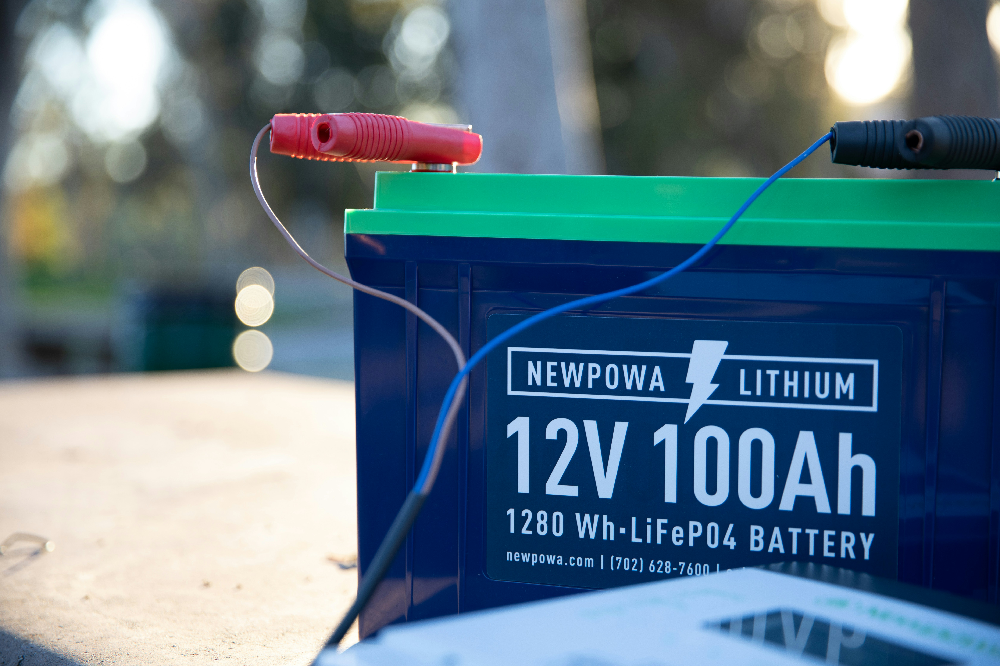

Car Battery Problems: Complete Guide to Diagnosis, Fixes, and Prevention
Your car’s battery is the heart of its electrical system. When it starts to fail, your vehicle can experience slow starts, flickering lights, or worse — no start at all. This guide covers everything you need to know about car battery problems, including how to recognize the signs, diagnose issues, perform simple fixes, and prevent future failures. Plus, learn how Carithm AI can help you troubleshoot your battery problems quickly and confidently.

Common Car Battery Problems
- Dead or discharged battery
- Slow or no engine crank
- Frequent need for jump-starts
- Dim headlights or dashboard lights
- Corroded or loose battery terminals
- Parasitic electrical drain
- Battery warning light on dashboard
Signs Your Car Battery Is Failing
- Engine cranks slowly or struggles to start
- Electrical components like lights or radio malfunction
- Check battery or charging system warning lights
- Swollen or leaking battery case
- Old battery age (typically 3–5 years or more)
Common Causes of Battery Problems
1. Old or Worn-Out Battery
Batteries lose capacity over time, especially after 3–5 years of use. Aging cells reduce the battery's ability to hold a charge.
2. Faulty Alternator
The alternator charges your battery while the engine runs. If it’s malfunctioning, your battery won’t recharge properly.
3. Corroded or Loose Terminals
Corrosion or loose battery cables reduce electrical flow, causing starting and charging problems.
4. Parasitic Electrical Drain
Some electrical components may draw power even when the car is off, draining the battery over time.
5. Extreme Temperatures
Very hot or cold weather can impair battery performance and reduce lifespan.
How to Test Your Car Battery
Using a Multimeter
Set your multimeter to DC voltage and measure across the battery terminals. A fully charged battery should read about 12.6 volts when the car is off.
Load Testing
Load testers simulate starting the engine and check if the battery can maintain voltage under load. Many auto shops offer this service.
Using OBD-II Data
Some vehicles report battery and charging system data via OBD-II. You can connect a scanner or use Carithm AI to interpret these codes and sensor data.
DIY Fixes and Maintenance Tips
- Clean battery terminals and cable ends with a baking soda and water solution
- Ensure terminals are tight and secure
- Check and replace worn or damaged cables
- Use a battery charger or maintainer if you don’t drive regularly
- Avoid short trips that don’t allow the battery to recharge fully
When to Replace Your Battery
If your battery is older than 3–5 years, frequently needs jump-starts, or fails load tests, replacement is usually the best option. Always choose a battery that meets your vehicle manufacturer’s specifications.
Preventive Measures to Extend Battery Life
- Regularly inspect and clean terminals
- Drive your car regularly and for sufficient durations
- Avoid leaving electrical components on when engine is off
- Use a smart battery maintainer if the car is stored long-term
- Keep your car in a garage or shaded area in extreme weather
Special Considerations for Hybrid and Start-Stop Vehicles
Hybrid and start-stop cars often use advanced AGM or EFB batteries which have different characteristics and failure modes. Make sure to follow manufacturer recommendations for testing and replacement.
Use Carithm AI for Fast Battery Diagnostics
Not sure what’s wrong with your battery? Simply describe your symptoms or enter diagnostic trouble codes into Carithm AI. Our smart tool analyzes data to suggest likely causes and practical fixes, helping you save time and money.
Conclusion
Battery problems can cause frustrating car troubles but are usually easy to diagnose and fix with the right knowledge and tools. Regular maintenance and smart monitoring through tools like Carithm AI can keep you on the road without unexpected breakdowns.